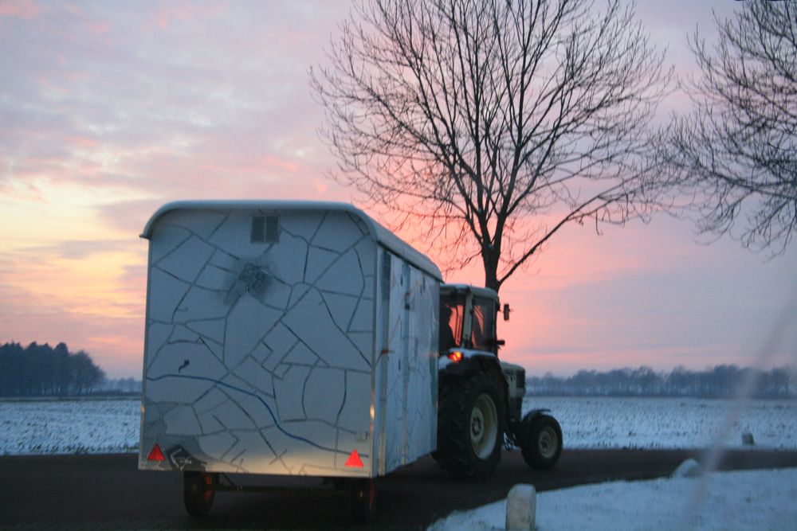
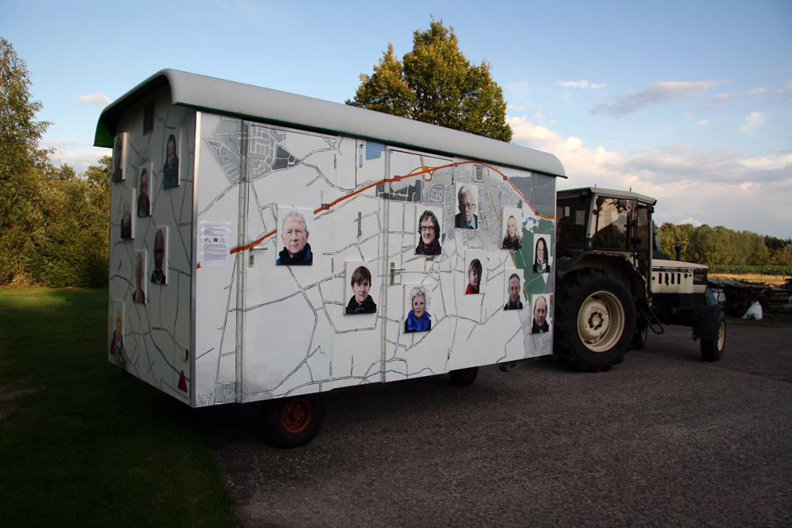
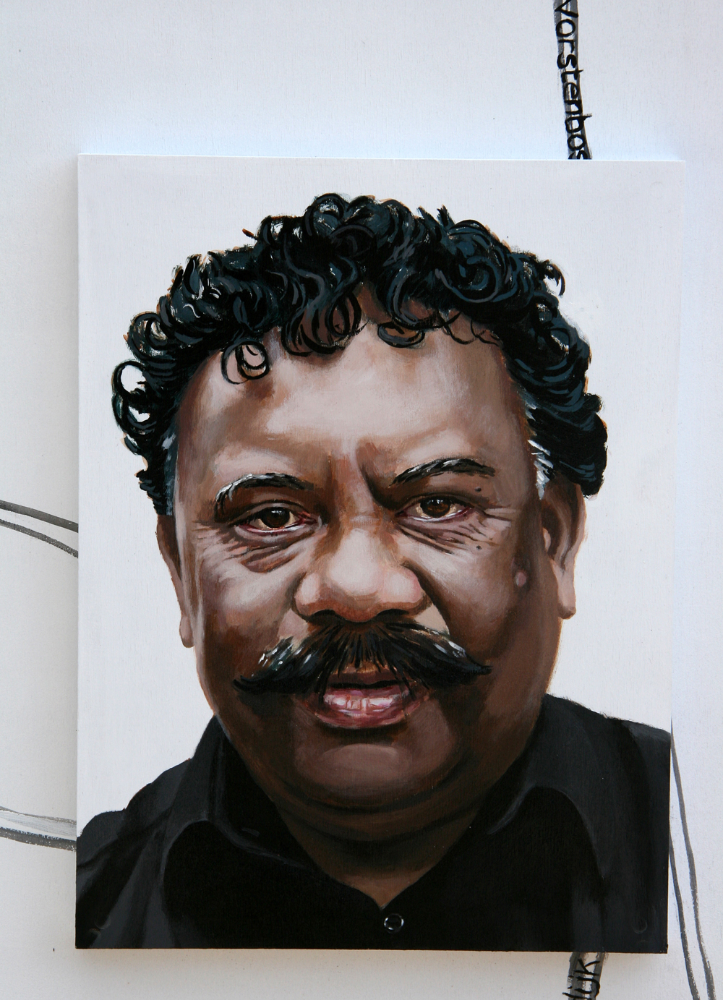
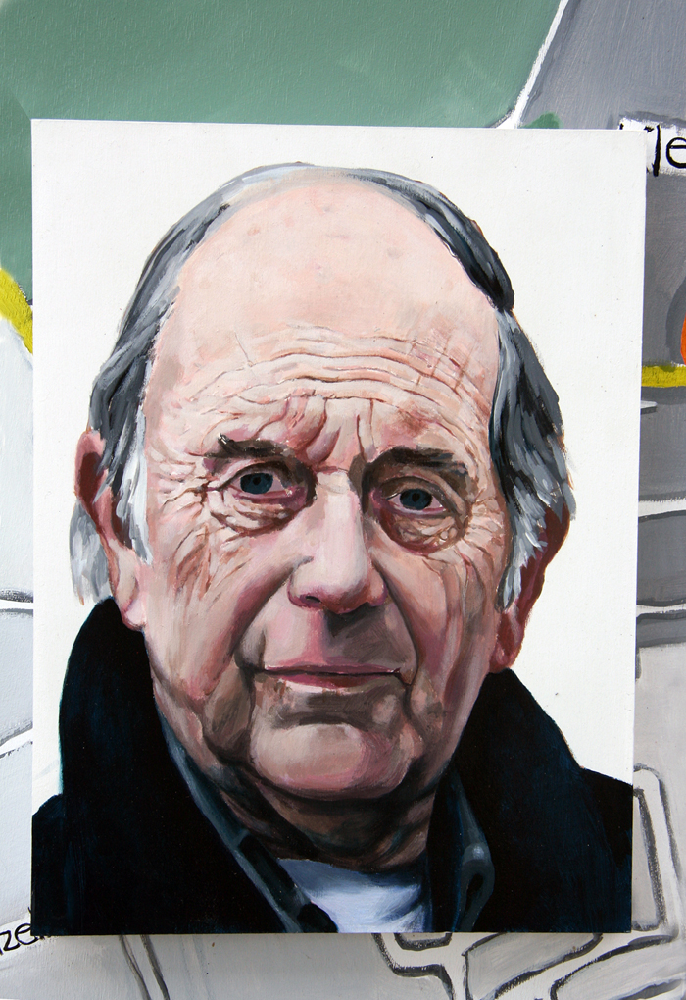
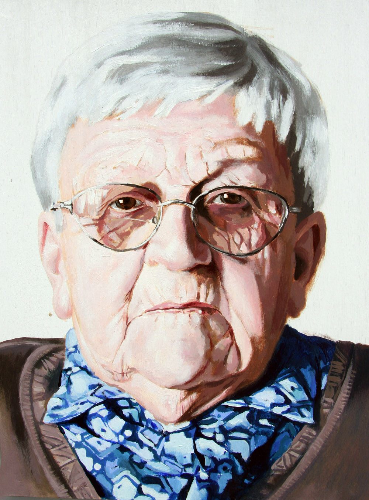
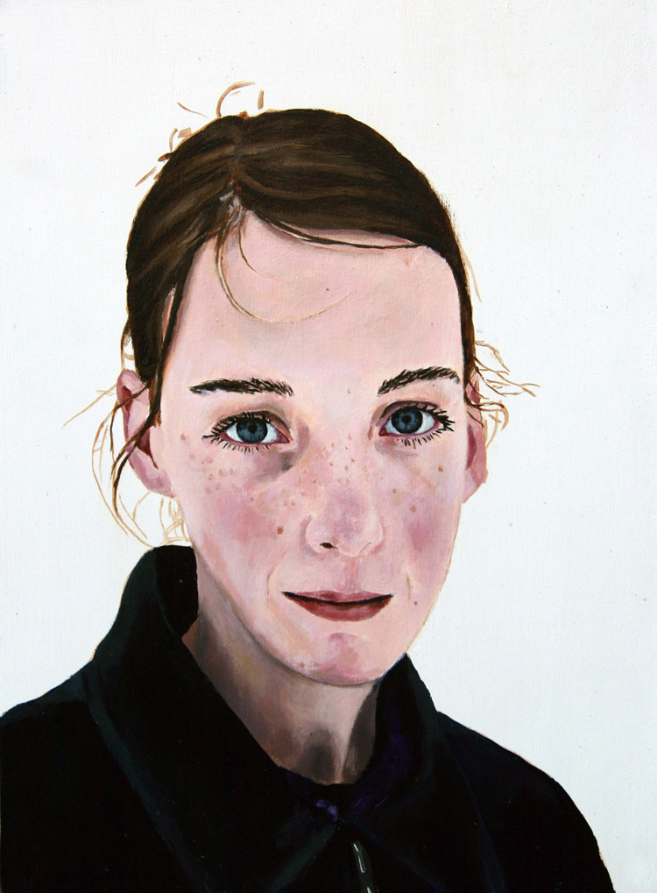
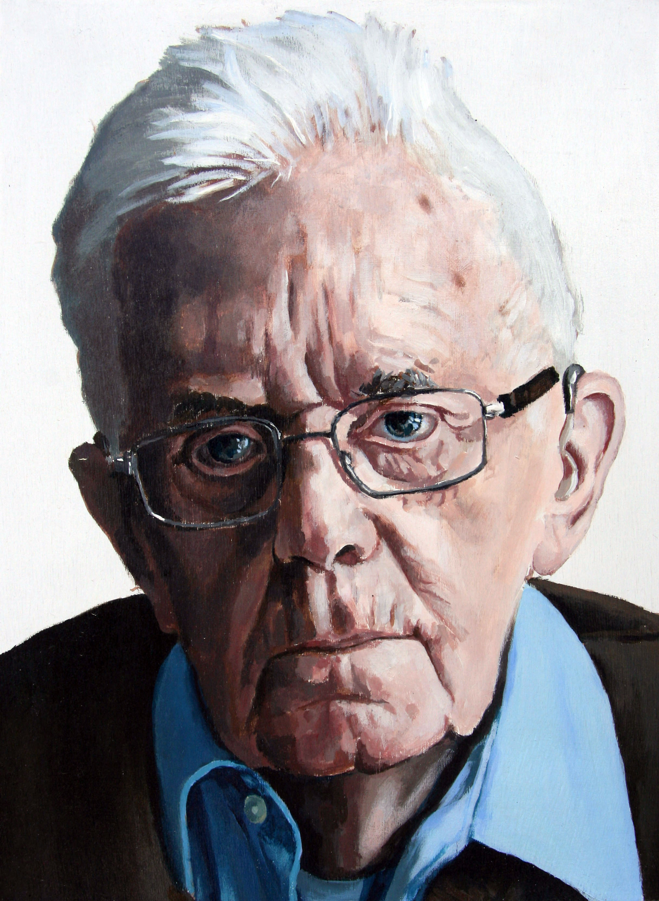

Een reis door de dorpen van Bernheze van de winter naar de zomer met een driedimensionale kaart van het gebied op zoek naar verhalen.
  
Een aantal portretten van vertellers in acrylverf op paneel, 30cm x 40cm. De panelen werden bevestigd aan de kaart gedurende de reis; een groeiend groepsportret in beeld en geluid.
  
Voor meer portretten kijk hier
In de onderstaande site kan je de verhalen horen van de mensen die hierboven zijn afgebeeld.